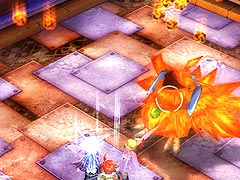
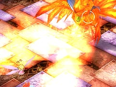
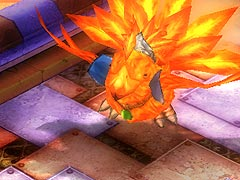

目次 > ゲームについて > 日本Falcom 攻略 > ZWEI II > ボス戦 > フェニックス
らんの眼
ZWEI II (ツヴァイ 2、ZWEI II Plus)
| 概要 | 情報 | 攻略チャート |
| フード交換 | ペットについて | ボス戦 |
| 敵キャラ一覧 | ハンターランク | G-コロッセオ |
| アイテム一覧 | ガジェット一覧 | トレジャー一覧 |
| ダンジョン一覧 | クリアデータ特典 | Plusの追加要素 |
| ZWEI II攻略へ | 目次へ戻る |
| フェニックス |
| 管理人は、アルウェンの「極光の魔法」で戦っています。「常闇の魔法」も有効だと思うのですが、エフェクトが大きく敵の攻撃が見えづらいので、ボス戦ではあまり使っていないのが正直なところです。  フェニックスの攻撃として、まず隕石を降らす攻撃があります。これは、いくつもの隕石を降らせ、衝撃波(爆風?)でダメージを与えるものです。画面を見ていれば隕石がだいたいどのあたりに落ちるかは分かるのですが、クォータービューのため正確までは判断できません。 そのため、隕石が少なそうな所へ移動してください。また、隕石を作ってから落とすまでに時間があるので、この間に「極光の魔法」を3 発ほど撃って攻撃するといいでしょう。  次に火柱を作る攻撃があります。この火柱は画面端まで届くので、遠くに逃げても無意味です。安全地帯はフェニックスの真正面なので、フェニックスの動きが見える位置ならば、よけること自体は難しくありません。  そして、突進です。これはむやみに逃げても追いつかれてしまうので、壁際に待機し、ある程度の距離までフェニックスが近づいてきたらジャンプでよけます。 突進に見せかけたフェイントを使ってくる場合もあるので注意して下しさい。 フェニックスの攻撃パターンは、隕石を降らせる1 回、火柱2 回、突進(フェイントも含む)を3 回の繰り返しです。そのため各攻撃への心の準備はできるのですが、火柱の1 回目が隕石の爆風表示中と重なるので、よけるには運も必要です。 |
| 概要 | 情報 | 攻略チャート |
| フード交換 | ペットについて | ボス戦 |
| 敵キャラ一覧 | ハンターランク | G-コロッセオ |
| アイテム一覧 | ガジェット一覧 | トレジャー一覧 |
| ダンジョン一覧 | クリアデータ特典 | Plusの追加要素 |
| ページの上部へ | ZWEI II 攻略へ | 目次へ戻る |